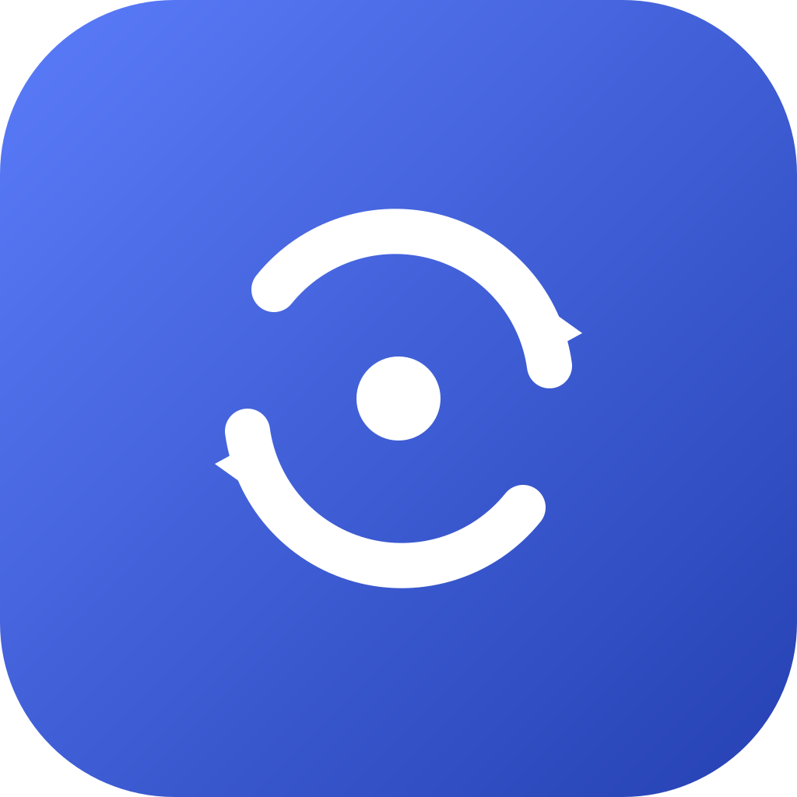

Lade Download-Informationen…

Video & Audio einfach konvertieren — kostenlos, für Windows & macOS. Alle gängigen Formate, Up- und Downscaling, Batch-Verarbeitung.
MP4, MKV, MOV, WebM, AVI, FLV, WMV, GIF · MP3, M4A, WAV, FLAC, OGG, Opus, WMA
Presets von 480p bis 8K oder frei wählbar, mit hochwertiger Skalierung
Mehrere Dateien gleichzeitig konvertieren, mit Fortschrittsanzeige
Fertige Profile für Kompatibilität, kleinste Datei, beste Qualität u.v.m.
Hinweis: Die Builds sind nicht codesigniert. Unter macOS beim ersten Start per Rechtsklick → „Öffnen“ bestätigen; unter Windows ggf. den SmartScreen-Hinweis („Weitere Informationen“ → „Trotzdem ausführen“) bestätigen.